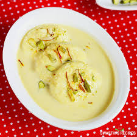

Rasmalai

Description
Rasmalai is a rich and creamy Indian dessert made with soft, spongy cottage cheese balls soaked in a fragrant milk-based syrup. The cottage cheese balls, often called "malai," are typically made by kneading together crumbled paneer, milk powder, and cardamom powder.
The syrup, which is made from milk and sugar, is often flavored with cardamom and saffron, giving it a delicate and aromatic taste. The combination of the soft, spongy cottage cheese balls and the rich, creamy syrup makes rasmalai a luxurious and indulgent dessert.